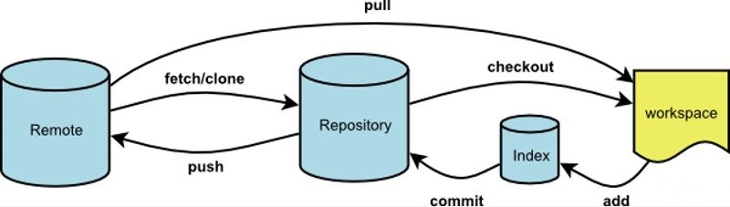

git init：创建/初始化一个的存储库
git init
git status:显示工作目录和暂存区的状态
git status
git add .：将文件添加到索引/暂存区
git add .
git commit:提交更改到存储库
git commit
git checkout:切换分支
git checkout login //分支login
git checkout -b login //创建并切换到分支login
git checkou -D login //删除分支logingit branch:创建分支/查看分支
git branch //不带参数查看分支|
git branch login //带参数创建分支logingit merge:合并分支
git merge login //将分支login合并到当前分支
git push:将本地分支的更新推送到远程主机
git push origin mastergit push -u origin login //在远程仓库创建分支login
git pull:从另一个存储库或本地分支获取并集成/整合：取回远程主机某个分支的更新再与本地的指定分支合并
git pull origin master
git log:查看日志
git log
git rm:从工作区和索引中删除文件
git rm text1.txt //删除文件text1.txt
git remote:管理存储库
git remote rm origin //删除原Git仓库，这样就可以重新绑定一个仓库了
